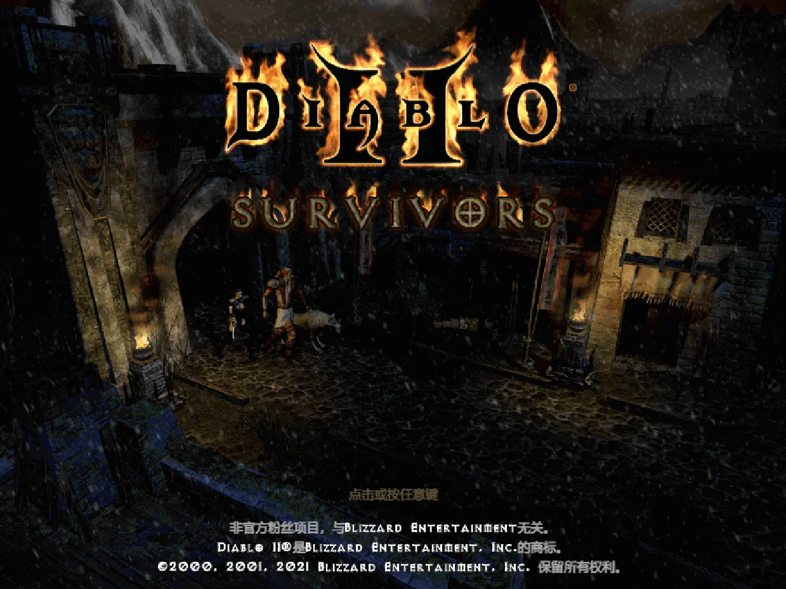
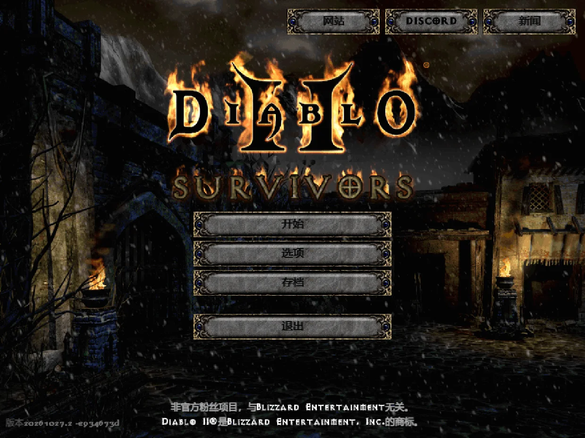
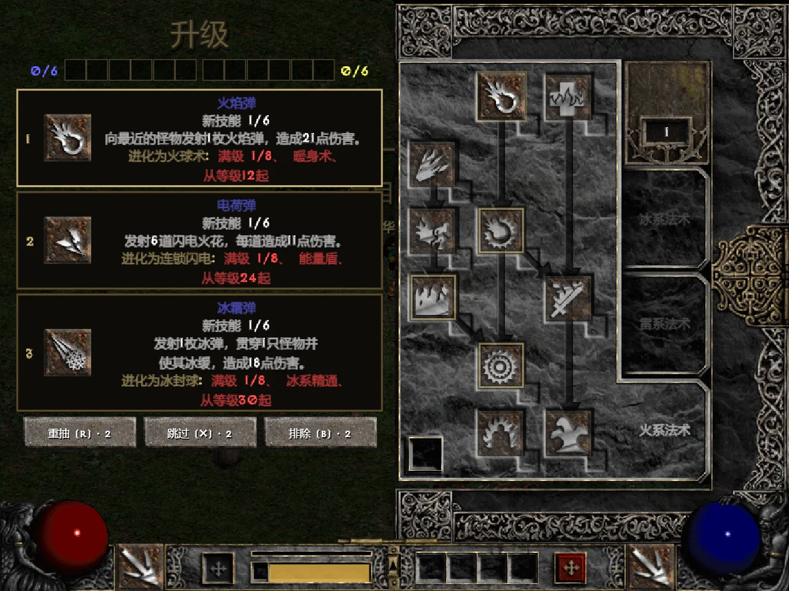
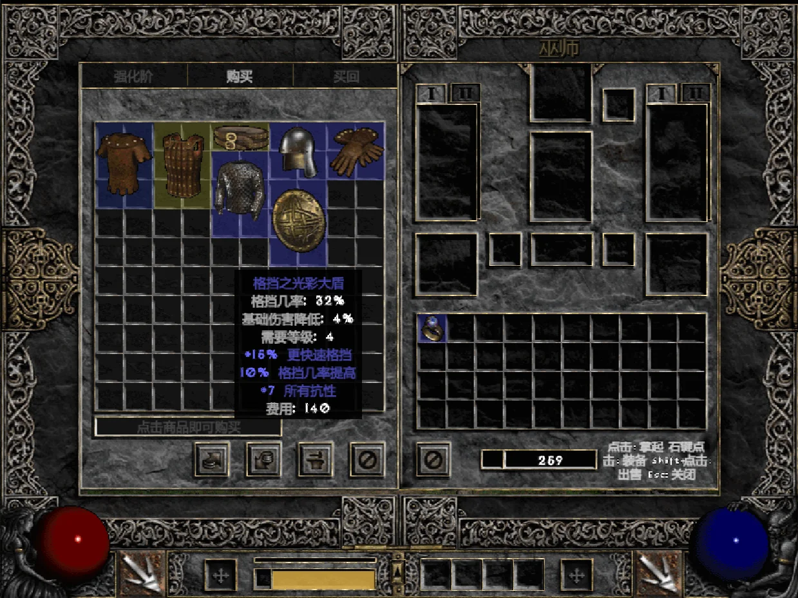
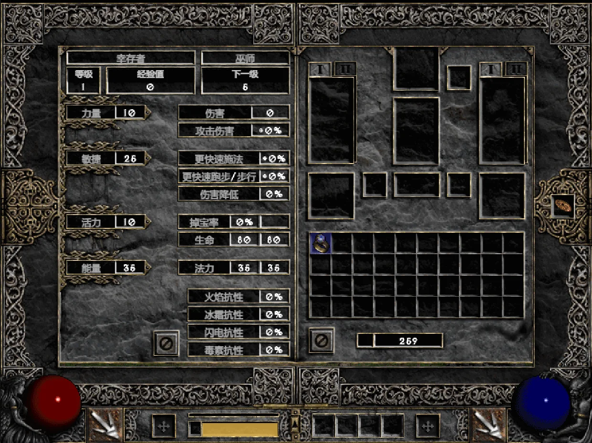
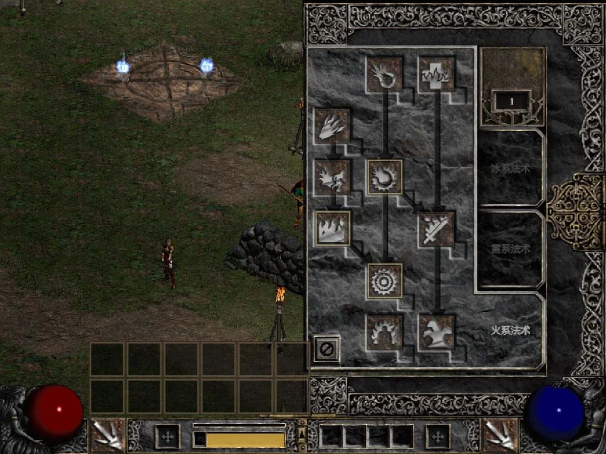
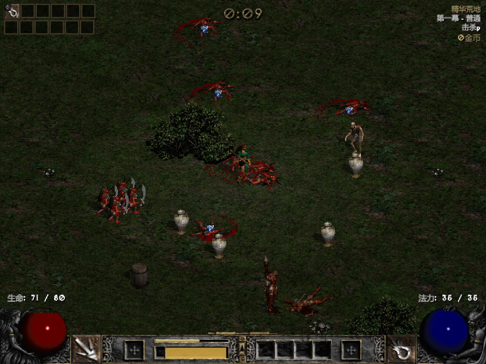
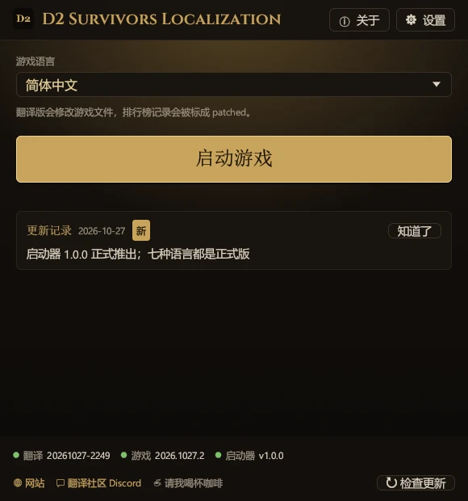

D2 Survivors
原作：framara
免费的非官方同人游戏，以《暗黑破坏神 II》为背景的幸存者类游戏。本翻译项目与原作者无关，游戏本身的问题请通过官方渠道反馈。
非官方玩家翻译
把 Diablo 2 Survivors（D2 Survivors／暗黑2幸存者、暗黑破坏神2幸存者）游戏本体汉化。不是中文攻略，而是界面、技能、物品、怪物、升级卡全部变成中文，用语以《暗黑破坏神 II：狱火重生》官方译名为准。启动器一键安装、自动更新，随时可以还原原版。
官方网页版已经移除，汉化只支持桌面版（Windows 启动器）。
玩过网页版的话，请用当初玩网页版的同一个浏览器打开「网页版存档转移」（官方页面，英文），把存档下载为 .txt，再到桌面版主菜单的「存档」（SAVES）→「打开存档文件」（Open a save file）选择这个文件。








游戏画面：D2 Survivors（framara），使用玩家自己的 Diablo II 文件
本项目只提供翻译，不包含任何游戏文件。开始之前，请先通过下面的官方渠道获取 D2 Survivors 和《暗黑破坏神 II》。
原作：framara
免费的非官方同人游戏，以《暗黑破坏神 II》为背景的幸存者类游戏。本翻译项目与原作者无关，游戏本身的问题请通过官方渠道反馈。
暴雪娱乐（Blizzard Entertainment）
D2 Survivors 会读取你电脑上《暗黑破坏神 II》的美术和音效资源，因此需要你自己拥有《暗黑破坏神 II：狱火重生》，或《暗黑破坏神 II》+《毁灭之王》（1.14 版本）。
译名参考：技能、物品、怪物、区域等名称沿用《暗黑破坏神 II：狱火重生》官方译名（繁体中文版用官方繁体中文，简体中文版用官方简体中文）；其余文本由本项目翻译。
中文（繁体）、中文（简体）、日语、德语、法语、俄语和波兰语均已正式推出，可以直接选择。
翻译、语言和启动器的更新。启动器每次打开都会获取最新翻译，无需重新下载。
以下是 D2 Survivors 作者写的更新说明，我们只负责翻译。
以下是 D2 Survivors 作者写的更新说明，我们只负责翻译。
以下是 D2 Survivors 作者写的更新说明，我们只负责翻译。
以下是 D2 Survivors 作者写的更新说明，我们只负责翻译。
不需要手动修改任何游戏文件，全部交给启动器处理。请先关闭游戏。启动器的界面会使用你选择的语言。
从 D2 Survivors 官网下载桌面版，按游戏的设置界面指定《暗黑破坏神 II》的安装位置，确认能正常进入游戏。
下载 d2s-launcher.exe，放在任意文件夹即可，无需安装。
第一次打开会先出现语言界面，每种语言都用它自己的文字显示。点击你的语言、再点「→」，启动器的界面和游戏的翻译都会使用这个语言。
①「游戏」：找到 D2 Survivors（默认在 %LOCALAPPDATA%\Programs\D2 Survivors，装在别处就点「选择文件夹…」）。②「Diablo II」：查找你电脑上的《暗黑破坏神 II：狱火重生》或经典版，找不到也可以点「跳过」。③「完成」：可以点「在桌面创建快捷方式」，再点「启动游戏」。第一次会下载翻译，并自动备份原版 app.asar。
默认每次启动都会获取最新的翻译（「设置」中的「启动时自动更新翻译」），游戏更新后也会自动重新应用。想换语言，在主界面的「游戏语言」中切换即可。
app.asar 就会换回原始文件。%LOCALAPPDATA%\D2SurvivorsLauncher 文件夹。想自己创建快捷方式的话，把下面这行设为快捷方式的目标，双击即可直接用指定语言启动游戏，不会弹出启动器窗口。（启动器的「在桌面创建快捷方式」会打开窗口并直接启动游戏。）
d2s-launcher.exe --launch --lang zh-CN--launch--play--lang <id>--no-update--update--restore--self-update--status不是。这是玩家自制的非官方翻译，与 D2 Survivors 开发者及暴雪娱乐均无关。
程序部分是。启动器、网站和工具的源代码都在 GitHub 上，采用 MIT 许可。启动器由 GitHub Actions 从公开的源代码自动编译（编译记录），每个 Release 都附有 d2s-launcher.exe.sha256，可以自行核对。
翻译数据（词典）目前没有开放许可，保留所有权利，详见 dict/LICENSE。词典中沿用的官方译名归 Blizzard Entertainment 所有。
有，已正式推出。用语以《暗黑破坏神 II：狱火重生》官方简体中文为准，按大陆的说法翻译，不是从繁体中文直接转换。在启动器的语言界面选择「简体中文」即可，也可以在游戏的语言设置里切换。
目前不行。启动器只有 Windows 版；官方的网页版已经移除，网页书签也随之停止，所以 Mac、Linux 和手机暂时无法使用这个汉化。
不会。启动器只替换游戏文件夹中的 resources\app.asar，存档保存在其他位置，不会被读取或修改。替换前会先备份原版。
可以。官方保留了一个网页版存档转移页面（只有英文和韩文），会从浏览器里找出网页版的存档，让你下载为 .txt 文件。
一定要用当初玩网页版的同一个浏览器（同一个用户配置）打开这个页面，才能找到存档；换其他浏览器或用无痕窗口都找不到。
下载后打开桌面版，在主菜单选「存档」（SAVES）→「打开存档文件」（Open a save file），选择刚下载的 .txt 即可导入。专家模式（Hardcore）的存档和游戏里一样无法转移。
游戏更新会替换 app.asar，翻译会暂时消失。照常从启动器或快捷方式打开游戏就会重新应用。
如果新版本改动太大、修改规则无法匹配，启动器不会强行修改文件，而是先用原版启动游戏，并显示「游戏刚更新，翻译修正中」。翻译修好后，下次启动就会自动重新应用，什么都不用做。
翻译借用了游戏内置的韩语语言位置，所以应用翻译后，菜单里的韩语会显示为所选语言的名称（例如「简体中文」）。想玩韩语版，在启动器中选择「한국어 (원본)」再启动。
游戏里的文字都已翻译，也在游戏里检查过没有漏译。如果看到英文，通常是游戏刚更新、加入了新的文字；翻译会在之后的更新中补上，启动器会自动下载。一直没补上的话，欢迎反馈。
选择翻译语言时，游戏会把记录标成 patched；要正常上榜，请在启动器的「游戏语言」中选择 English。
启动器没有代码签名（需要每年付费购买），在下载量还不多之前，Windows SmartScreen 都会弹出这个警告。
点击「更多信息」，再点击「仍要运行」即可，之后不会再提示。请只从本站或 GitHub Releases 下载；每个 Release 都附有 d2s-launcher.exe.sha256，可以用 certutil -hashfile d2s-launcher.exe SHA256 核对。
浏览器下载时如果提示该文件不常被下载，在下载列表的菜单里选择「保留」。
暂时不行。游戏本身只允许英文字母和韩文作为角色名。
错别字、漏译、启动器的问题，请到汉化社区 Discord 反馈，那里也会发布最新消息。
翻译错误和程序问题也可以在 GitHub Issues 反馈。
游戏本身的问题（与翻译无关的）请到 D2 Survivors 游戏官方 Discord（英文）反馈。
欢迎！所有语言都已正式推出，但翻译总有可以改进的地方。看到不自然的说法或错别字，特别欢迎母语玩家告诉我们。请到这里联系我们。